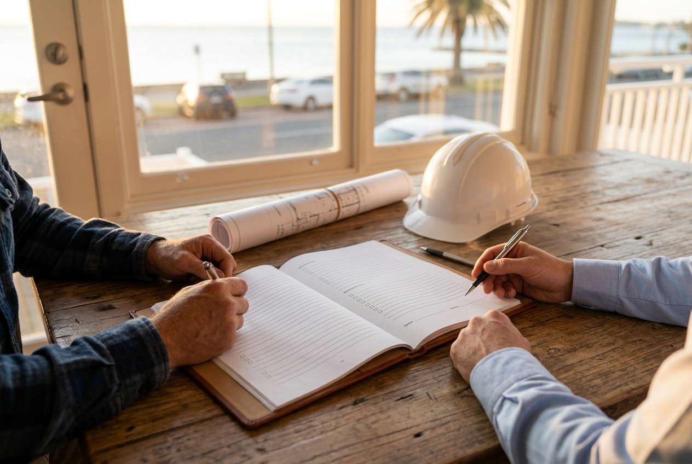

Your questions answered · Dealing with a builder
How to choose a builder in Queensland:
the whole checklist, in plain words.
Choosing a builder is the biggest decision in a house build, and most families make it on a feeling. The feeling matters. But Queensland also gives you a set of checks, most of them in the QBCC's own guide, that sort a good builder from a risky one before you've paid a cent. This is all of them, in the order you'll need them.
 Nathan Brain, carpenter and builder at Sabre
23 September 2026
15 min read
Nathan Brain, carpenter and builder at Sabre
23 September 2026
15 min read

The whole checklistChoosing a builderIs the builder licensed for your job?
This is the first check, and it takes five minutes. The Queensland Building and Construction Commission (QBCC) is the state body that regulates building. It licenses builders, keeps a public register of every licence, handles complaints about defective work, and runs the Queensland Home Warranty Scheme.
Search the builder's licence number on the QBCC register and check three things:
- It's current. Not suspended, not cancelled, not expired.
- Its class covers your job. A licence for one kind of work doesn't cover every kind.
- The name matches. The licensee must be the same entity whose name is on the contract you'll sign.
The register also shows the licensee's history, including any disciplinary action. What the QBCC is and how to check a licence.
“Search the QBCC licensee register to check the history of your builder before you sign the contract on your next repair, renovation or build.”
Queensland Building and Construction Commission, Our lists and registers. Their words, not ours. Do it before the deposit, not after. Sabre's licence is 15486557.
What do memberships and reviews tell you?
Less than the licence, and still something.
Master Builders Queensland is the state's building industry association. A member has joined, pays to belong, and has agreed to the association's Code of Conduct, which requires members to conduct their business dealings in a fair, reasonable and honest manner. It's not a licence, it's not a regulator, and it's not insurance. Those come from the QBCC whether or not the builder is a member. What Master Builders membership actually means. For the record, Sabre is a Master Builders Queensland member, No. 00352, and our QBCC licence is 15486557. Check both before you believe either.
Reviews tell you what it was like to deal with the builder, which no register can. Read all of them, including the bad ones, and look at how the builder responded. Look for names. A review that names the person who picked up the phone tells you who you'll be dealing with.
How do you find builders worth comparing?
Broadly, you'll meet two kinds of offer. A package is a builder's existing plan sold at an advertised price and fitted to your block. A custom build starts with your block and your family. Know which one you're being offered and what the advertised number assumes. What a knockdown rebuild package is.
You'll also meet two kinds of builder: the national and volume brands, and the small independents, locally owned and building a handful of homes at a time. Find the independents on the QBCC register by suburb, on the Google map for “builders” plus your suburb, and on the fences in your own street. The small independent builders on Brisbane's Bayside.
Then run the same checks on every one of them. A small builder is held to exactly the same licence and the same insurance as a national one.
What should the quote show?
Everything, line by line, and the allowances separately. For a knockdown rebuild a complete quote has five groups of lines:
- Before the house: asbestos removal, demolition, disconnections, the soil test, engineering, design, approvals and the certifier.
- The site: earthworks, retaining, drainage, service connections.
- The structure: footings and slab or subfloor, frame, roof, external walls and windows.
- The inside: plumbing, electrical, linings, joinery, tiling, painting, floors, fit-off.
- The outside and the paperwork: driveway, fencing, landscaping, the Home Warranty premium, insurances, margin and GST.
Then the allowances and provisional sums: the items the price can't fix yet, each with its estimate. The QBCC's guide says to keep them to a minimum because the final cost often exceeds the estimate, and to check what proportion of the total they make up. Compare the lines, not the totals. What should be in a builder's quote, line by line.
On a knockdown rebuild, most of the difference between two quotes comes from the old house and the block. What decides the cost of a knockdown rebuild explains why an honest builder won't give you a number before seeing it.
When is the cheapest quote the wrong one?
When it's cheap because something is missing. Quotes are usually thin in three places:
- The site. Earthworks and retaining are where a sloping or awkward block costs money, and where a quote written from a plan rather than a visit is lightest.
- The allowances. A long list of them means a large part of the price isn't fixed yet. Add them up and ask why each one is there.
- What simply isn't there. The driveway, the landscaping, the fencing, the certifier. Lay two quotes side by side and look for the lines one has and the other doesn't.
The cheapest total and the cheapest house are often different quotes.
Fixed price or cost-plus?
A fixed price contract states the price up front, and the builder carries the risk of getting it wrong, within the limits of the variations and allowances written in. A cost-plus contract is one where the amount the builder receives can't be accurately calculated when you sign. You pay what the job costs plus a margin, and you carry the risk.
“QBCC strongly recommends home owners obtain formal legal advice before signing either of these types of contracts which increase your legal risk, reduce your Home Warranty Scheme protection and often result in disputes and cost overruns.”
Queensland Building and Construction Commission, Consumer Building Guide, version 3, effective July 2023, on cost-plus and construction management contracts.
The QBCC also reports final costs under cost-plus often running 50% to 100% higher than anticipated, and says non-completion cover under the Home Warranty Scheme isn't available on a cost-plus contract at all. Fixed price or cost-plus, and which protects you.
What's in the contract?
Every Queensland domestic building contract of $20,000 or more has four parts: the schedule (your job's details and numbers), the general conditions (the standard rules), any special conditions (changes agreed for your job), and the plans and specifications (what's actually being built).
The law requires certain things in there: the price shown prominently on the first page of the schedule if it's fixed; a warning about anything that can change the price; the start date and practical completion date, or how they're worked out; the deposit and progress payments; and the rules on variations and extensions of time. If the price isn't on the front page, ask why. What's in a Queensland building contract, in plain English.
The builder must give you the QBCC's Consumer Building Guide before you sign a contract of $20,000 or more. Read the contract with it beside you. Then ask the questions it suggests, and a few more. The questions to ask a builder before you sign.
What should you ask before you sign?
Group your questions into five: the licence, the contract, the money, the time and the people. Most come straight from the QBCC's guide, and a good builder answers them without blinking because the answers are already in the contract.
- The licence: what's your licence number, and is it in the same name as this contract?
- The contract: is it fixed price? Where's the price on the schedule? What can change it?
- The money: what's the deposit, what are the stages, and what are the allowances, one by one?
- The time: how are the start date and practical completion date set, and what extends them?
- The people: who do we call when something goes wrong, and who's on the phone in month four?
A builder who bristles at the licence question, or can't tell you what the allowances are, has told you something useful for free.
How much do you pay, and when?
Three rules do most of the work.
- The deposit is capped. On a contract of $20,000 or more, the most a builder can take before work starts on site is 5%. Under $20,000 it's 10%. Up to 20% is allowed only where more than half the work is done off site.
- Progress claims follow the work. After the deposit, each claim must be directly related to work on site and proportionate to it.
- The final payment waits for practical completion.
Never pay more than the contract says, or earlier than it says. Doing so reduces your protection under the Home Warranty Scheme, and it's the mistake families make with a builder they like. Progress payments: what you pay, and when.
If a lender is involved, construction loans are usually paid in stages too, after the lender's valuer confirms each stage is done, and that lines up with the progress payment rules. The loan decision belongs to the lender or a broker. Construction loans for a knockdown rebuild.
What insurance protects you?
Four policies matter on a house build, and only one of them is really about you.
- The Queensland Home Warranty Scheme. Compulsory for residential work over $3,300 by a licensed contractor. It protects you against non-completion, defective work and subsidence for up to six years from completion. You should receive a Notice of Cover within two weeks of signing. If you don't, ask why.
- Contract works insurance covers the half-built house against fire, storm, theft and damage.
- Public liability covers injury or damage to third parties.
- Workers' compensation covers the people on site.
The last three protect the builder and the job. You want to see that they exist, because if they don't, problems on site become your problems. Ask for the certificates of currency before work starts. It's an ordinary request, and a builder who has them won't mind sending them over. What insurance a builder should have.
What should happen during the build?
Variations in writing, first. A variation is any change to the work or materials after the contract is signed. In Queensland, every variation must be agreed in writing by you before the variation work starts, and any price increase can't be required until that work has started. When shouldn't the price have changed? When the “variation” was already in the contract, when it's fixing the builder's own error, or when it was never agreed in writing. Variations, and when the price shouldn't have changed.
A certifier at each stage. A building certifier, licensed by the QBCC, issues the approval and inspects the mandatory stages. For a new house those are excavation, footings, slab, frame and final. The builder must give you copies of inspection certificates as soon as practicable, and you can ask the certifier for them in writing. If you ask the certifier in writing for the inspection documents, they have to provide them within five business days. The certifier checks the house against the approved plans and the code. It isn't a quality check of the finishes. That's your handover walk. How progress inspections and certifiers work.
What happens after handover?
Three clocks start running, and they're different lengths.
- The defects liability period in your contract: the window in which the builder comes back to fix defects. Its length is whatever your contract says, and it's usually the shortest of the three.
- The statutory warranties in Schedule 1B of the QBCC Act: six years for structural defects and one year for everything else. They're part of every regulated domestic building contract, whether it mentions them or not.
- The Home Warranty Scheme, with its own time limits for noticing and claiming a defect.
The details are worth knowing before you need them. For a breach of the statutory warranties, legal proceedings have to be started within the warranty period, or within a further six months if the problem shows up in its last six months. Under the Home Warranty Scheme, a structural defect has to be claimed within three months of first becoming aware of it, and a non-structural defect has to be noticed within six months of substantial completion and claimed within seven. Keep a folder, date everything, and report early.
What a defects liability period is, and what protects you after it.
What if the builder goes under?
It's the fear behind every other question, so here's the straight answer. If a licensed builder on a fixed-price contract can't finish your house, the Home Warranty Scheme can pay to get it finished, within its limits. The claim has to be lodged within three months of the contract ending.
The QBCC lists when a non-completion claim is available: the contract has validly ended because of the builder's default, the builder has died, the company has been deregistered, or the builder is insolvent and the QBCC has cancelled their licence. If no work had started, the scheme refunds the deposit up to the legal maximum. If work had started, it pays the difference between what's left unpaid under your contract and the reasonable cost of finishing, within the scheme's limits, plus limited amounts for accommodation and for storm or fire damage to the unfinished work.
Two things shrink that protection before you ever need it: paying more than the contract allowed, or earlier than it required, and signing a cost-plus contract, where non-completion cover isn't available at all. Both are choices you make at the start. What happens if a builder goes under mid-build.
The warning signs, all in one place
- The licence doesn't match the name on the contract, or the builder is vague about it.
- A deposit of more than 5% on a contract of $20,000 or more, before work starts on site.
- No price on the first page of the schedule, or a quote that's mostly allowances.
- Being steered toward cost-plus when the job could be priced.
- Requests to pay ahead of the contract “to keep things moving.”
- Variations agreed on site with a nod instead of in writing.
- No Notice of Cover from the Home Warranty Scheme within two weeks of signing.
Any one of these is a question to ask. Two or three together are a reason to stop.
Should you build it yourself?
Some people do. In Queensland you need an owner-builder permit from the QBCC for work worth more than $11,000, and most applicants must complete a course first. You then take on the builder's legal role: every trade, every approval, every inspection, the safety obligations and the defects.
Owner-builders aren't eligible for the Home Warranty Scheme, and if you sell within six years you must tell the buyer in writing that the work isn't covered. It can suit a capable person with time, on a simple job. On a knockdown rebuild with asbestos, a flood level and a sloping block, it's a full-time job with your own money as the safety net. Should we be an owner-builder?
If you're buying an old house to knock down, the checks start even earlier, with the block itself. What a building and pest inspection is worth on a knockdown, and the whole knockdown rebuild path, step by step.
Common questions
How do I check if a builder is licensed in Queensland?
Search their licence number or name on the QBCC's online licensee register. Check the licence is current, that its class covers your work, and that the name matches the entity on your contract. The register also shows their history.
What is the maximum deposit a builder can ask for in Queensland?
For a contract of $20,000 or more, 5% before work starts on site. Under $20,000 it's 10%. Up to 20% is allowed only where more than half the work is done off site.
Is a Master Builders member better than a non-member?
Membership means the builder has agreed to the association's Code of Conduct. It isn't a licence or insurance; those come from the QBCC for every licensed builder. Check the licence first either way.
What protects me if the builder doesn't finish?
The Queensland Home Warranty Scheme, for residential work over $3,300 by a licensed contractor on a fixed-price contract. Paying ahead of the contract reduces the payout, and a cost-plus contract has no non-completion cover.
How many quotes should we get?
Enough to compare line by line. What matters is that every quote covers the same lines and lists its allowances separately, so you're comparing the same job, not just the totals.
Sources: Queensland Building and Construction Commission, Consumer Building Guide, version 3 (July 2023), Our lists and registers, Contracts and agreement types, Deposits and progress payments, Home warranty for non-completion claims, About owner-building; Master Builders Queensland, Code of Conduct; Schedule 1B, Queensland Building and Construction Commission Act 1991. Each linked post lists its own sources and the date they were read. Plain-English guidance from a builder; not legal or financial advice.
Where most families start
A walk through your house with Nathan.
Run every check on this page on us too. Our QBCC licence is 15486557. Then book a walk-through and ask Nathan the hard questions face to face.
Book your walk-through with Nathan Call 0422 831 306
Already thinking about a rebuild? The free block check is on the same page.